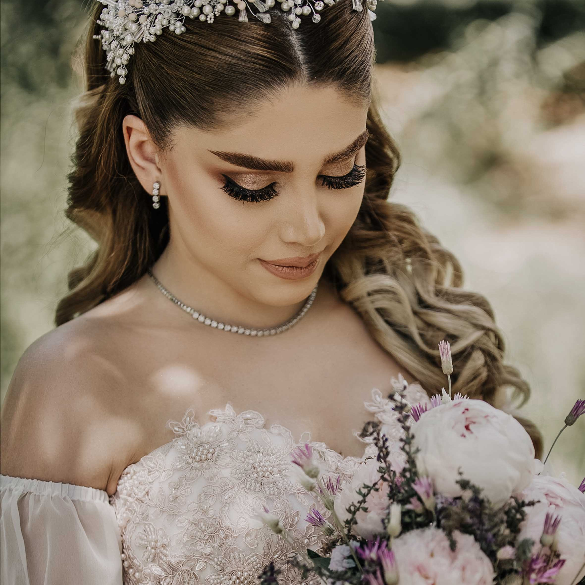
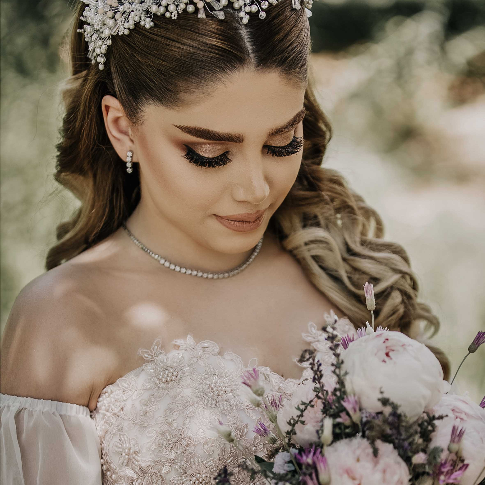

THE SALON


Welcome to BeautyBliss
Beautybliss has proudly been one of the pioneers of beauty related services in Bangladesh .In these past 15 years, BeautyBliss has.. experienced immense growth....... and is now home to over 80,00,000 valuable........ customers who have availed ..over 1,30,00,000 of Beautybliss’s premium services. The high-quality services and achievements haven’t been bound to its 3 ladies beauty outlets ........ only, but have expanded and reached out to receive an opportunity to sarve The BeautyBliss family of 3000 employees, with a........... complete array of expertise, aims to enhance beauty using 2,37,435 square feet made available to us. However, enhancing beauty isn’t an easy task, and hence Persona has investe including Beautybliss Health, Spring Spa to the beauty, fashion and health needs of all of the precious clients with utmost sincerity.

OUR SERVICES
Everyone wants to look good, especially when it is the time to party. The idea behind hosting or going to parties is to meet the people you know as well as to make new friends. At the same time, you try to impress others by your dressing sense and looks, along with the way you carry yourself. The self-confidence comes when you know that you are looking perfect, with the right make up and a dazzling ensemble. However, while getting ready for a night out, you need to know that party makeup also has some limits and rules. New makeup trends are: Gloss, Glitter and Shimmer.
MAKEOVER

Are you bored of your hair color? Do you want to revamp your look? If yes, then the easiest way to change your look would be to opt for hair coloring. A new hair color can add a new dimension to your personality, making you look more confident and impressive. Color plus gloss available for translucent colors which can lighten, darken or brighten hair.
HAIR

Hairs can be straight, curly or wavy and this factor is one of the most important one while choosing a proper hairstyle for an individual. They are categorized according to degree of curl in the hair strand. Visit us today for latest and trendy haircuts and autumn / winter essential looks 2010-2011 hairstyle collections. The next hair fashion revolution starts with you.
SKIN
The first step to good foot care is to remove the hard skin from your feet. You may have to use a pumice stone or apply cream generously on the area in order to remove the dead foot skin. Soak your feet in a bowl of slightly hot water. This will soften the dirt and the dead skin, which will allow you to remove it easily. You could use a foot file as well, rub your skin gently and rinse off the flaky residue.